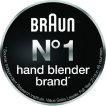
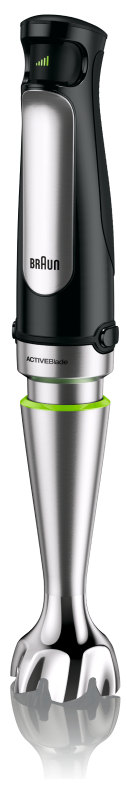

Braun MultiQuick MQ7035
Увеличенная скорость и мощность измельчения для ваших любимых блюд
Управлять блендером Braun намного проще с технологией Easy Control
Улучшенная форма купола блендера предотвращает разбрызгивание и обеспечивает чистоту вашей кухни
Легендарный мотор в 850 Вт даёт погружному блендеру мощность стационарного